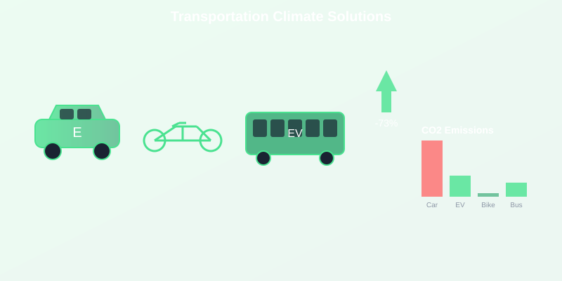

Transportation accounts for nearly 25% of global CO2 emissions, making it one of the biggest opportunities for individual climate action. With 1,338 tons of CO2 entering the atmosphere every second, your travel choices matter more than ever.
Why Transportation Matters in 2025
International aviation emissions surged by 6.8% in 2025 as travel rebounds. Every mile you choose to walk, bike, or take public transit directly reduces the 42.2 billion tons of annual emissions driving the climate crisis.
1. The Electric Vehicle Revolution
Electric vehicles (EVs) are no longer the future - they're here and rapidly becoming the smart choice for both climate and cost.
- 60-70% lower lifetime emissions than gas cars
- $1,000/year average fuel savings
- 4.6 metric tons CO2 saved annually per vehicle
- Zero tailpipe emissions - cleaner air in cities
Your EV Climate Contribution
Switching one gas car to electric prevents 4.6 tons of CO2 annually - equivalent to what 100 trees absorb in a year. With the carbon budget down to 170 billion tons, these savings are critical.
2. Public Transit: The Hidden Climate Hero
Public transportation is one of the most underutilized climate solutions available today.
- 75% less emissions per mile than driving alone
- 4.8 metric tons CO2 saved annually per regular transit user
- Reduced traffic congestion - saves fuel for everyone
- Electric buses - zero emissions public transit growing rapidly
Make Transit Work for You
Even occasional transit use matters. Taking the bus or train twice a week instead of driving saves 500+ kg CO2 annually - equivalent to charging 250,000 smartphones.
3. Human Power: Biking and Walking
The original zero-emission transportation is making a major comeback in cities worldwide.
- Zero emissions - perfect for the climate crisis
- 2.4 metric tons CO2 saved annually per bike commuter
- Improved health - reduced healthcare emissions
- Cost savings - $800/year average vs. car ownership
The Climate Math of Biking
Biking 5 miles instead of driving prevents 2.3 kg CO2 emissions. With 42.2 billion tons emitted yearly, every bike trip helps preserve our shrinking 170 billion ton carbon budget.
4. Smart Driving: Maximize Every Gallon
When you must drive, smart techniques can cut your emissions by 20-30% without changing your vehicle.
- Gentle acceleration - saves 15-20% fuel
- Maintain steady speed - cruise control on highways
- Proper tire pressure - 3% better mileage
- Remove excess weight - 2% savings per 100 lbs
Small Changes, Big Impact
Eco-driving saves 600+ kg CO2 annually for average drivers. That's like planting 30 trees and letting them grow for 10 years.
5. Smart Trip Planning: The Emissions Game
How you plan your trips can dramatically reduce your transportation footprint.
- Combine errands - one trip vs. multiple saves 50% emissions
- Work from home - 2 days/week = 40% commute emissions cut
- Carpooling - split emissions with passengers
- Choose closer destinations - support local businesses
The Remote Work Revolution
Working from home 2 days per week saves 1.2 tons CO2 annually - equivalent to the emissions from 250,000 smartphone charges. This is one of the biggest individual climate actions available.
6. Rethinking Air Travel
With aviation emissions up 6.8% in 2025, reducing air travel has become critical for climate action.
- One round-trip flight = 1-3 tons CO2 per person
- Business class = 3x economy class emissions
- Short flights = worst emissions per mile
- Alternatives - trains, buses, virtual meetings
The Aviation Climate Crisis
Skip one round-trip flight and you prevent the same emissions as driving a car for 3-6 months. With only 170 billion tons left in the carbon budget, aviation choices matter more than ever.
Your Transportation Climate Action Plan
Transportation is where individual actions have the biggest climate impact. Here's how to start:
Start Today - This Week:
- Try one transit trip instead of driving
- Bike for trips under 3 miles - you might love it
- Combine errands into one efficient trip
- Research EV incentives in your area
Track Your Transportation Impact
Visit our live carbon counter to see the 1,338 tons of CO2 entering the atmosphere every second. Your transportation choices directly slow this clock and help preserve our critical 170 billion ton carbon budget.
Transportation accounts for a quarter of global emissions. Your choices here aren't just about getting from A to B - they're about whether future generations inherit a livable planet. Every sustainable trip matters in 2025.